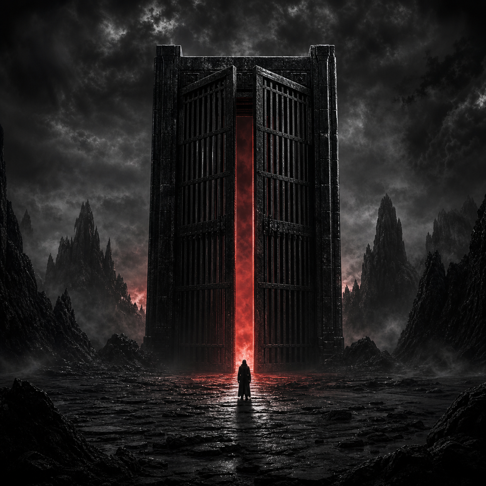

CHAPTER I● In development
The confrontation
SELF MIRROR
A record built around reflection, pattern recognition, and the parts of the self that can no longer stay hidden.
01The Cage DoorMASTERED＋

OFFICIAL ARTWORKLISTEN
ABOUT THE SONG
I wrote The Cage Door because there is something inside me trying to get out. It is fed up with the bullshit, fed up with being hurt, and it wants out. This song is the cage opening—a way to purge everything I have been forced to carry.
MOOD / SOUND
Pressure. Hurt. Rage. Confrontation. Release. The sound of something contained for too long finally forcing its way into the open.
WHERE IT IS NOW
Mastered audio received. Ready for final release details.